Skjermingsfradrag er en viktig skattemessig regel som gir aksjonærer fradrag for alternativkostnaden ved å investere egenkapital i et aksjeselskap fremfor å plassere pengene i en sikker renteinvestering. Dette fradraget sikrer at aksjonærer ikke beskattes for normalavkastning, men kun for meravkastning utover en risikofri rente. Skjermingsfradraget er særlig relevant for utbytte og gevinster ved salg av aksjer, og påvirker både egenkapital og skatteplanlegging på en fundamental måte.
For en komplett oversikt over hvordan skjermingsfradrag fungerer sammen med andre skatteordninger for aksjonærer, se vår Aksjonærmodellen - Komplett Guide til Norsk Aksjebeskatning.
Seksjon 1: Grunnleggende om Skjermingsfradrag
Skjermingsfradrag bygger på prinsippet om at normalavkastning ikke skal beskattes. Dette sikrer at skattesystemet kun beskatter risikopremien og unormal avkastning, hvilket fremmer investeringsvilje og kapitalallokering.
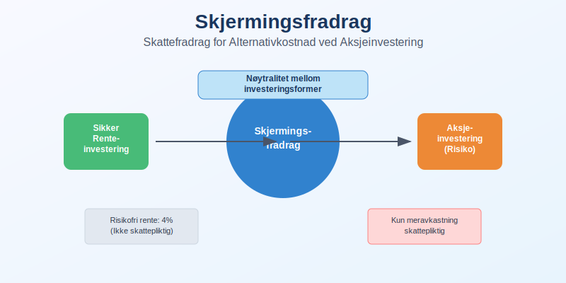
1.1 Teoretisk Grunnlag for Skjermingsfradrag
Teoretisk fundament for skjermingsfradrag er at aksjonærer skal behandles likt uavhengig av investeringsform:
- Renteinvestering: Renter beskattes løpende, men inflasjon og risikofri avkastning anses som kompensasjon
- Aksjeinvestering: Kun meravkastning utover risikofri rente skal beskattes
- Nøytralitetsprinsipp: Skattesystemet skal ikke påvirke valg mellom låne- og egenkapitalfinansiering
Alternativkostnadstilnærming:
Skjermingsfradrag = Aksjonærens investering × Risikofri rente × Eierperiode
1.2 Skjermingsfradrag i Norsk Skattelov
Aksjonærmodellen (aksjonærloven) implementerer skjermingsfradrag gjennom:
Hovedprinsipper:
| Element | Beskrivelse | Regnskapseffekt |
|---|---|---|
| Skjermingsgrunnlag | Aksjekapital tillagt tilskudd | Registrert i balansen |
| Skjermingsrente | Rente på statsobligasjoner med 3 års løpetid | Offentliggjøres årlig |
| Opptjeningsperiode | Fra erverv til realisasjon/utdeling | Tidsvektet beregning |
| Fremføring | Ubenyttet skjerming fremføres | Skattefordel bokføres |
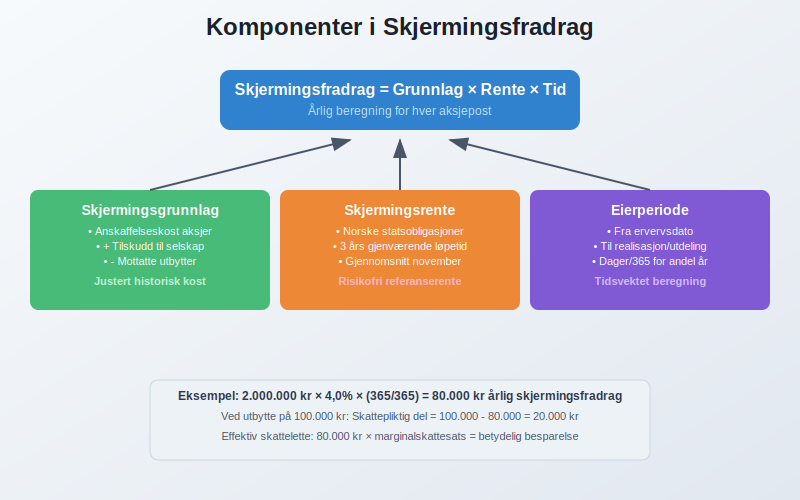
1.3 Betydning for Investeringsbeslutninger
Strategisk viktighet av skjermingsfradrag påvirker:
Finansieringsvalg:
- Egenkapital vs. gjeld: Skjermingsfradrag reduserer egenkapitalens skatteulempe
- Utbyttepolitikk: Optimalisering av utdelinger vs. tilbakekjøp
- Reinvestering: Sammenligning av intern vs. ekstern kapitalavkastning
Regnskapsmessige implikasjoner:
- Utsatt skatt: Skjermingsfradrag skaper midlertidige forskjeller
- Verdsettelse: Påvirker virkelig verdi av aksjeinvesteringer
- Rapportering: Noteopplysninger om skatteposisjoner
Seksjon 2: Beregning av Skjermingsfradrag
2.1 Skjermingsgrunnlag
Skjermingsgrunnlaget består av aksjonærens skattemessige inngangsverdi på aksjen:
Komponenter i skjermingsgrunnlaget:
- Opprinnelig anskaffelseskost
- Senere tilskudd til selskapet fra aksjonær
- Tilleggsvederlg ved senere aksjetegning
- Justiert for tidligere mottatte utbytter (som reduserer grunnlaget)
Eksempel på skjermingsgrunnlag:
Anskaffelseskost aksjer: 1.000.000 kr
+ Tilskudd til selskapet: 200.000 kr
- Mottatt utbytte (reduserer grunnlag): 100.000 kr
= Justert skjermingsgrunnlag: 1.100.000 kr
Spesielle situasjoner:
| Situasjon | Behandling | Regnskapsføring |
|---|---|---|
| Aksjespleis | Pro rata fordeling | Vedlikeholde historisk kost. Les mer om aksjespleis |
| Aksjesplitt | Pro rata fordeling | Vedlikeholde historisk kost. Les mer om aksjesplitt |
| Fondsemisjon | Ingen endring i totalt grunnlag | Økt antall aksjer |
| Kapitalnedsettelse | Reduserer grunnlaget | Regnskapsmessig tilbakebetaling |
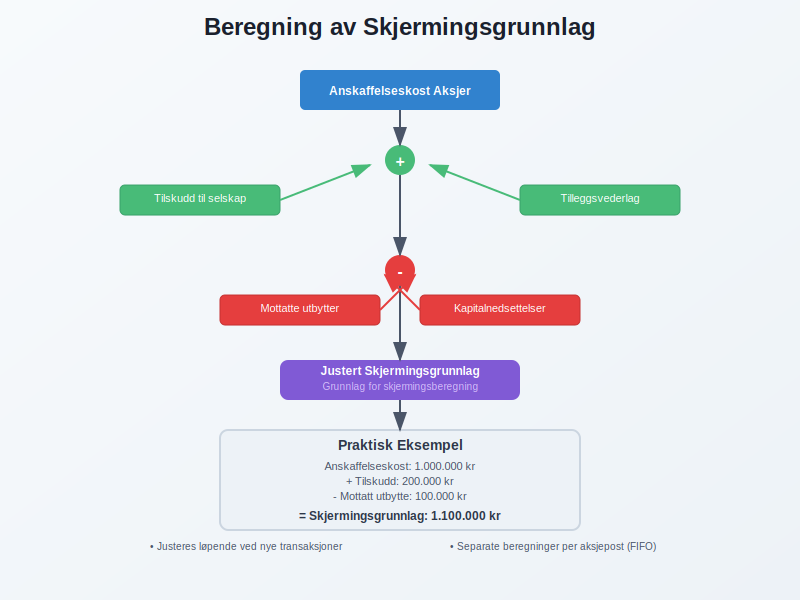
2.2 Skjermingsrente
Skjermingsrenten fastsettes årlig og skal reflektere risikofri avkastning:
Bestemmelse av skjermingsrente:
- Referanserente: Rente på norske statsobligasjoner med 3 års gjenværende løpetid
- Beregningsperiode: Gjennomsnitt av daglige noteringer i november måned
- Offentliggjøring: Skattedirektoratet publiserer satsen i desember
- Anvendelse: Renten gjelder for påfølgende inntektsår
Historisk utvikling av skjermingsrente:
| År | Skjermingsrente | Økonomisk kontekst |
|---|---|---|
| 2020 | 1,0% | Lav rente, COVID-19 |
| 2021 | 1,0% | Fortsatt ekspansiv pengepolitikk |
| 2022 | 2,0% | Inflasjon og renteøkninger |
| 2023 | 3,5% | Normalisering av renter |
| 2024 | 4,0% | Høyere rentenivå |
2.3 Praktisk Beregning
Detaljert beregningsmetodikk for skjermingsfradrag:
Trinn 1: Identifiser eierperiode
Eierperiode = Fra ervervsdato til realisasjonsdato
Tidsvektet beregning ved delvis salg
Trinn 2: Beregn årlig skjerming
Årlig skjermingsfradrag = Skjermingsgrunnlag × Skjermingsrente × (Eierperiode/365)
Trinn 3: Akkumuler total skjerming
Total skjerming = Sum av årlige skjermingsfradrag for hele eierperioden
Komplekst beregnesesempel:
Situasjon: Kjøp av aksjer 1. mars 2023, salg 1. september 2024
Anskaffelseskost: 2.000.000 kr
Skjermingsrenter: 2023: 3,5%, 2024: 4,0%
Beregning:
År 2023 (306 dager): 2.000.000 × 3,5% × (306/365) = 58.685 kr
År 2024 (245 dager): 2.000.000 × 4,0% × (245/365) = 53.699 kr
Total skjermingsfradrag: 112.384 kr
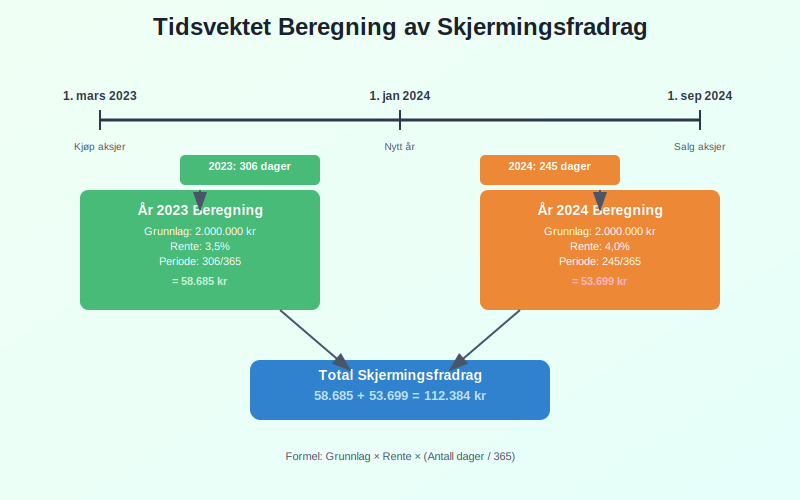
Seksjon 3: Anvendelse ved Utbytte
3.1 Utbytte og Skjermingsfradrag
Utbyttebeskatning modifiseres av skjermingsfradrag gjennom følgende mekanisme:
Beregning av skattepliktig utbytte:
Skattepliktig utbytte = Mottatt utbytte - Anvendt skjermingsfradrag
Prioritering: Skjermingsfradrag anvendes automatisk mot utbytte før eventuell fremføring til senere år.
Praktisk eksempel utbytte:
Mottatt utbytte: 150.000 kr
Opptjent skjermingsfradrag for året: 120.000 kr
Skattepliktig utbytte: 150.000 - 120.000 = 30.000 kr
Fremførbar skjerming: 0 kr (fullt utnyttet)
3.2 Fremføring av Ubenyttet Skjerming
Ubenyttet skjermingsfradrag fremføres uten tidsbegrensning:
Regler for fremføring:
- Ubegrenset fremføring til senere år
- Kun mot utbytte og aksjegevinster fra samme selskap
- Bortfall ved salg av hele aksjeposten
| Situasjon | Behandling av fremførbar skjerming |
|---|---|
| Delvis aksjesalg | Pro rata reduksjon |
| Totalt aksjesalg | Bortfall av resterende skjerming |
| Selskapsfusjon | Kan overføres til overtakende selskap |
| Likvidasjon | Anvendes mot likvidasjonsutbytte |
Regnskapsmessig behandling:
Debet: Utsatt skattefordel (skjermingsfradrag)
Kredit: Skattekostnad (reduksjon)
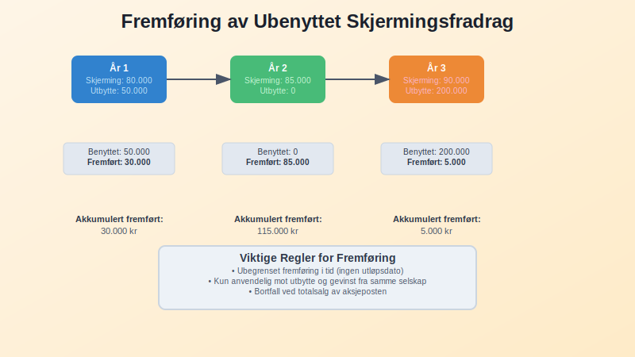
3.3 Utbyttepolitikk og Optimalisering
Strategisk utbyttepolitikk kan optimaliseres med hensyn til skjermingsfradrag:
Optimaliseringsstrategier:
- Timing av utbytter: Tilpasse til opparbeidet skjerming
- Utbytte vs. tilbakekjøp: Sammenligne skatteeffektivitet
- Reinvesteringsalternativer: Vurdere selvfinansiering vs. utdeling
Regnskapsmessige konsekvenser:
Planlagt utbytte: 200.000 kr
Tilgjengelig skjerming: 180.000 kr
Optimal utbytte (skatteeffektivt): 180.000 kr
Tilleggsutbytte (full beskatning): 20.000 kr
Beslutningsmartiks for utbyttepolitikk:
| Scenario | Tilgjengelig skjerming | Anbefalt strategi |
|---|---|---|
| Høy | Større enn planlagt utbytte | Maksimer utbytte |
| Medium | Tilsvarende planlagt utbytte | Følg opprinnelig plan |
| Lav | Mindre enn planlagt utbytte | Vurder utsettelse/reduksjon |
Seksjon 4: Skjermingsfradrag ved Aksjesalg
4.1 Gevinst- og Tapberegning
Aksjegevinst beregnes etter fradrag for skjermingsfradrag:
Beregningsformel:
Skattepliktig aksjegevinst = (Salgspris - Anskaffelseskost) - Samlet skjermingsfradrag
Eksempel på gevinstrealisasjon:
Salgspris: 3.000.000 kr
Anskaffelseskost: 2.000.000 kr
Brutto gevinst: 1.000.000 kr
Samlet skjermingsfradrag (5 år): 400.000 kr
Skattepliktig gevinst: 600.000 kr
4.2 Tap og Skjermingsfradrag
Aksjetap håndteres forskjellig avhengig av skjermingssituasjonen:
Scenarioer ved tap:
| Scenario | Behandling | Regnskapseffekt |
|---|---|---|
| Tap > Opptjent skjerming | Fullt fradragsberettiget tap | Standard tapsnedskrivning |
| Tap < Opptjent skjerming | Redusert tapsføringsrett | Begrenset skattefordel |
| Tap = Opptjent skjerming | Ingen skattepliktig gevinst/tap | Nøytral skatteposisjon |
Komplekst tapseksempel:
Salgspris: 1.500.000 kr
Anskaffelseskost: 2.000.000 kr
Regnskapsmessig tap: 500.000 kr
Opptjent skjermingsfradrag: 300.000 kr
Skattemessig tap: 500.000 - 300.000 = 200.000 kr
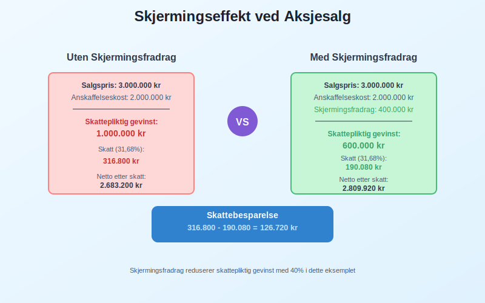
4.3 Delvis Salg og Proporsjonalitet
Delvis aksjesalg krever pro rata beregning av skjermingsfradrag:
Beregningsmetodikk:
Andel solgt = Antall solgte aksjer / Totalt antall aksjer
Anvendt skjerming = Total opptjent skjerming × Andel solgt
Praktisk eksempel delvis salg:
Total aksjepost: 1.000 aksjer
Solgt: 400 aksjer (40%)
Total opptjent skjerming: 500.000 kr
Anvendt skjerming ved salg: 500.000 × 40% = 200.000 kr
Fremførbar skjerming: 300.000 kr (for resterende 600 aksjer)
FIFO-prinsipp for eldre aksjeposter:
Ved blandet anskaffelse anvendes først inn, først ut-prinsippet for å identifisere hvilke aksjer som selges og tilhørende skjermingsgrunnlag.
Seksjon 5: Selskapshandlinger og Skjermingsfradrag
5.1 Fusjon og Fisjon
Selskapsomdannelser påvirker skjermingsfradrag avhengig av struktur og kontinuitet:
Skattefri fusjon:
- Kontinuitet: Skjermingsgrunnlag videreføres i overtakende selskap
- Vederlagsaksjer: Samme skjermingsgrunnlag som opprinnelige aksjer
- Omregningsforhold: Justeres for fusjonsforhold
Fisjon (oppspaltning):
| Fisjontype | Skjermingsbehandling | Dokumentasjonskrav |
|---|---|---|
| Symmetrisk fisjon | Pro rata fordeling | Verdsettelseserklæring |
| Asymmetrisk fisjon | Spesielle regler | Skattemessig kontinuitetstest |
| Grenseoverskridende | Nasjonale regler | EU-direktiv compliance |
5.2 Kapitalforhøyelse og -nedsettelse
Endringer i aksjekapital påvirker skjermingsgrunnlaget:
Kapitalforhøyelse:
Ny tegning: Øker skjermingsgrunnlag med tegningskurs
Fondsemisjon: Ingen endring i skjermingsgrunnlag per aksje
Fortrinnsrett: Proporsjonalt basert på tegningsandel
Kapitalnedsettelse:
Kontant utbetaling: Reduserer skjermingsgrunnlag kr for kr
Fondsnedsettelse: Ingen endring (kun nominell reduksjon)
Kombinasjon: Blandet behandling etter type
5.3 Likvidasjon
Selskapsllikvidasjon utløser spesielle regler for skjermingsfradrag:
Likvidasjonsutbytte:
- Første trinn: Skjermingsfradrag reduserer skattepliktig utbytte
- Andre trinn: Overskytende behandles som aksjegevinst
- Tredje trinn: Tap kan fradragsføres
Eksempel på likvidasjonsberegning:
Likvidasjonsutbytte mottatt: 2.200.000 kr
Opprinnelig skjermingsgrunnlag: 2.000.000 kr
Opptjent skjermingsfradrag: 300.000 kr
Beregning:
Likvidasjonsutbytte: 2.200.000 kr
- Skjermingsgrunnlag: 2.000.000 kr
= Brutto gevinst: 200.000 kr
- Skjermingsfradrag: 300.000 kr
= Skattemessig tap: 100.000 kr (fradragsberettiget)
Seksjon 6: Internasjonale Aspekter
6.1 Grenseoverskridende Investeringer
Internasjonale investeringer møter komplekse samspill mellom nasjonale skjermingsregler og skatteavtaler:
Utfordringer ved utenlandske aksjer:
- Dobbeltbeskatning: Kildelandsskatt vs. bostedslandsskatt
- Skjermingsfradrag: Kun tilgjengelig for norske aksjer
- Crediting: Fradrag for betalt utenlandsk skatt
| Investeringstype | Skjermingsfradrag | Alternativ skattelindring |
|---|---|---|
| Norske aksjer | Fullt tilgjengelig | N/A |
| Nordiske aksjer | Ikke tilgjengelig | Skatteavtaler |
| EU-aksjer | Ikke tilgjengelig | EU-direktiver |
| Tredjeland | Ikke tilgjengelig | Begrenset crediting |
6.2 Skatteavtaler og Koordinering
Skatteavtalenes påvirkning på skjermingsfradrag og internasjonale strukturer:
OECD-modellkonvensjon:
- Utbyttebeskatning: Maksimal kildeskatt 5-15%
- Kapitalgevinster: Hovedsakelig beskatning i bostedsland
- Transparensprinsipp: Gjennomsyn i visse strukturer
Praktiske koordineringsutfordringer:
Norsk mor → Utenlandsk datter:
- Utbytte fra datter: Kildelandsskatt + norsk restskatt
- Skjermingsfradrag: Ikke tilgjengelig
- Løsning: Fritaksmetoden eller crediting
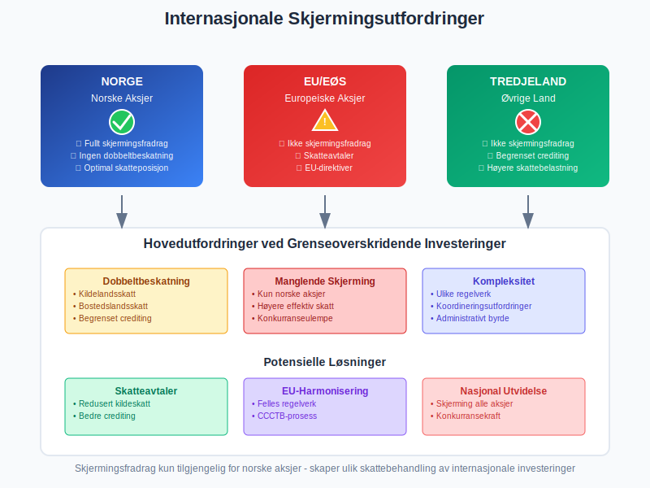
6.3 Transfer Pricing og Skjermingsfradrag
Internprising mellom nærstående selskaper påvirker skjermingsgrunnlaget:
Armlengdeprinsippet anvendt på skjermingsfradrag:
- Lånerenter: Må være markedsmessige for optimal skjerming
- Konsernbidrag: Påvirker skjermingsgrunnlag
- Management fees: Reduserer grunnlag for skjerming
Dokumentasjonskrav:
- Markedsanalyse av renter
- Sammenlignbare transaksjoner
- Økonomisk substans i strukturen
- Country-by-country rapportering
Seksjon 7: Regnskapsmessig Behandling
7.1 Bokføring av Skjermingsfradrag
Regnskapsmessig erfassung av skjermingsfradrag krever særlig oppmerksomhet på tidspunkt og klassifisering:
Opptjening av skjermingsfradrag:
Debet: Utsatt skattefordel (skjermingsfradrag)
Kredit: Skattekostnad (reduksjon)
Anvendelse ved utbytte:
Debet: Skattekostnad
Kredit: Utsatt skattefordel (skjermingsfradrag)
7.2 Verdsettelse og Balanseføring
Verdsettelse av skattefordeler fra skjermingsfradrag følger IAS 12 prinsipper:
Verdsettelseskriterier:
| Faktor | Vurdering | Regnskapsbehandling |
|---|---|---|
| Sannsynlighet | Fremtidige skattepliktige inntekter | Konservativ tilnærming |
| Tidshoriont | Forventet realisasjon | Nåverdijustering |
| Usikkerhet | Skattelovgivningsendringer | Sensitivitetsanalyse |
Noteopplysninger:
- Samlede skatteposisjoner med oppbygging og anvendelse
- Sensitivitetsanalyse for endringer i skjermingsrente
- Forventede fremtidige utbytter som grunnlag for verdsettvelse
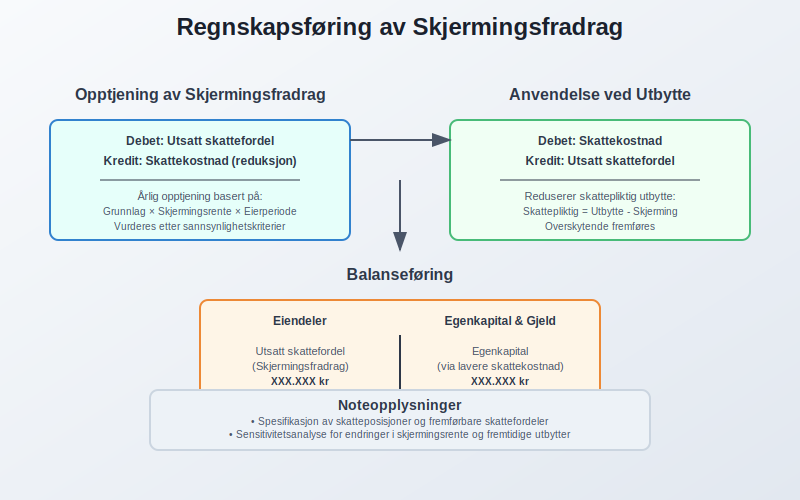
7.3 Intern Rapportering og Styring
Management rapportering bør inkludere skjermingsfradrag som del av skatteplanleggingen:
KPI-er for skjermingsstyring:
Skjermingsdekning = Akkumulert skjerming / Planlagt utbytte
Effektiv skatterate = Total skatt / (Utbytte - Anvendt skjerming)
Skjermingsoptimalisering = Benyttet skjerming / Total tilgjengelig
Beslutningsstøtte:
- Scenario-analyser for ulike utbyttestrategier
- NPV-beregninger som inkluderer skjermingseffekt
- Sensitivitetsanalyse for renteendringer
Seksjon 8: Strategisk Skatteplanlegging
8.1 Optimaliseringsstrategier
Langsiktig skatteplanlegging kan optimaliseres gjennom strukturelle tiltak og timing:
Strukturelle optimaliseringer:
- Holdingselskap-struktur: Konsentrer skjermingsfradrag
- Generasjonsskifte: Planlegg overføringer for optimal skjerming
- Selskapstomatiske: Tilpass organisasjonsform til skjermingsregler
Timingstrategier:
| Timing-element | Optimalisering | Regnskapseffekt |
|---|---|---|
| Aksjekjøp | Tidlig på året for maksimal skjerming | Økt avkastningskrav |
| Utbyttetiming | Tilpass til opparbeidet skjerming | Optimalisert kontantstrøm |
| Aksjesalg | Vurder skjerming vs. markedstiming | Realiserte gevinster |
8.2 Porteføljeoptimalisering
Porteføljetilnærming til skjermingsfradrag inkluderer:
Diversifiseringsstrategier:
Norske aksjer: Maksimal skjermingseffekt
Internasjonale aksjer: Ingen skjerming, men annen diversifikasjonsverdi
Obligasjoner: Benchmark for skjermingsrente
Allokering av kapital:
Optimal allokering = f(forventet avkastning, risiko, skjermingseffekt)
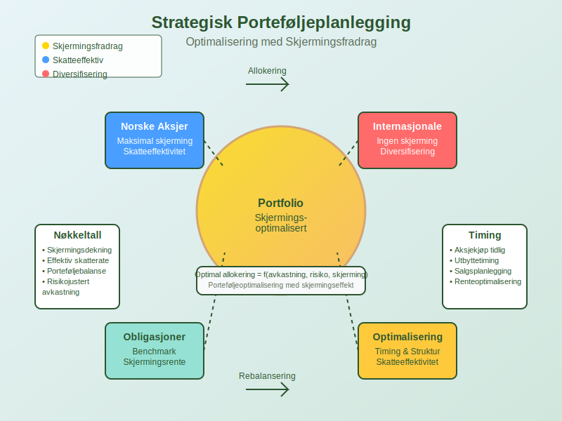
8.3 Teknologistøtte for Skjermingsstyring
Digitale verktøy for skjermingsberegning og -optimalisering:
Systemfunksjonalitet:
- Automatisk beregning av daglig skjerming
- Scenario-modellering for ulike strategier
- Integrasjon med porteføljestyringssystem
- Rapportering til skattemyndigheter
Implementering i ERP-systemer:
Module: Tax Management
Submodule: Shielding Calculation
- Real-time tracking
- Automatic rate updates
- Portfolio optimization
- Compliance reporting
Seksjon 9: Endringer og Reformer
9.1 Historisk Utvikling
Utviklingen av skjermingsfradrag har vært preget av politiske og økonomiske hensyn:
Milepæler:
| År | Endring | Begrunnelse |
|---|---|---|
| 2006 | Innføring av aksjonærmodellen | Forenkle skattesystem |
| 2016 | Justering av RISK-regler | Redusere kompleksitet |
| 2022 | Økt skjermingsrente | Følge rentenivå |
9.2 Aktuelle Reformdiskusjoner
Pågående debatt om fremtidige endringer i skjermingsfradrag:
Diskuterte endringer:
- Begrensning i tid: Maksimal periode for opptjening
- Tak på skjerming: Maksimalbeløp per aksjonær
- Utvidelse: Skjerming for utenlandske aksjer
- Forenkling: Reduserte administrative byrder
Politiske argumenter:
For bevaring: Investeringsincentiver, nøytralitet, forenkling
For endring: Skatteinntekter, fordeling, internasjonale hensyn

9.3 EU-rettslige Aspekter
EU-retten påvirker utformingen av skjermingsfradrag:
Relevante prinsipper:
- Fri bevegelighet av kapital: Likbehandling av investeringer
- Statsstøtteregler: Selektive skattefordeler
- Harmonisering: Koordinering med andre EU-land
Fremtidige utfordringer:
CCCTB (Common Consolidated Corporate Tax Base):
- Felles skattegrunnlag
- Påvirkning på nasjonale skjermingsregler
- Koordinert implementering
Seksjon 10: Praktisk Implementering
10.1 Systemer og Verktøy
Praktisk implementering av skjermingsfradragssystemet krever robuste systemer:
IT-systemkrav:
- Database for aksjeposter med historiske data
- Automatisk oppdatering av skjermingsrenter
- Beregningsmotor for komplekse scenarier
- Rapporteringsmodul for selvangivelse
| Systemkomponent | Funksjonalitet | Integrasjon |
|---|---|---|
| Portfolio Management | Sporing av aksjeposter | Real-time data feed |
| Tax Engine | Skjermingsberegninger | Automatiske updates |
| Reporting Module | Regulatory filing | Altinn interface |
10.2 Dokumentasjon og Kontrollspor
Dokumentasjonskrav for å støtte skjermingsfradrag-beregninger:
Nødvendig dokumentasjon:
- Kjøps- og salgsnotaer for alle aksjetransaksjoner
- Utbytteopplysninger med beregningsdetaljer
- Skjermingsberegninger med tidsvektning
- Selskapshandlinger og påvirkning på grunnlag
Internkontroll-elementer:
1. Månedlig avstemming av skjermingskontoer
2. Kvartalsvis review av beregningsmetodikk
3. Årlig validering mot eksterne kilder
4. Dokumentert godkjenningsprosess
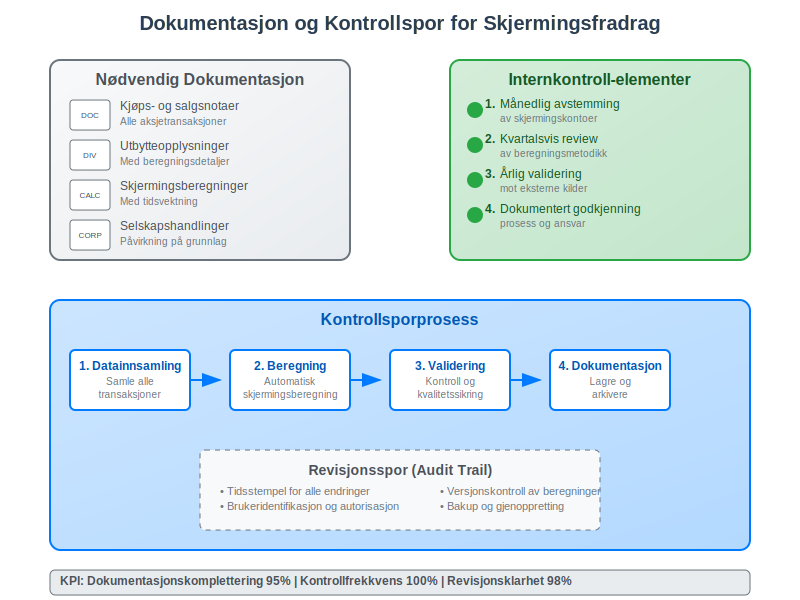
10.3 Compliance og Rapportering
Etterlevelse av skjermingsfradrag-reglene krever systematisk tilnærming:
Compliance-sjekkliste:
- Årlig oppdatering av skjermingsrenter
- Korrekt beregning av eierperioder
- Riktig behandling av selskapshandlinger
- Fullstendig dokumentasjon av transaksjoner
- Revisorgodkjenning av beregningsmetodikk
Rapporteringsfrister:
| Rapporteringstype | Frist | Mottaker |
|---|---|---|
| Selvangivelse | 31. mai | Skatteetaten |
| RF-1167 (Skjermingsfradrag) | 31. mai | Skatteetaten |
| Kontrollrapport | På forespørsel | Skatteetaten |
Seksjon 11: Fremtidige Utviklingstrekk
11.1 Digitalisering og Automatisering
Fremtidens skjermingsfradrag vil være preget av økt digitalisering:
Teknologiske trender:
- AI-baserte beregningssystemer
- Blockchain for transparente transaksjonslogger
- Real-time rapportering til skattemyndigheter
- Automatisk optimalisering av skatteposisjoner
Systemintegrasjon:
Børs → Portfolio Management → Tax Engine → Skatteetaten
Real-time data flow med automatisk compliance-sjekk
11.2 Internasjonale Harmoniseringsinitiativer
Globale initiativer kan påvirke fremtidig utforming:
OECD-initiativer:
- BEPS (Base Erosion and Profit Shifting) regelverket
- Pillar 1 og 2 fra OECD/G20 prosjektet
- Automatisk informasjonsutveksling mellom land
EU-harmonisering:
| Initiativ | Påvirkning | Tidshorisont |
|---|---|---|
| CCCTB | Felles skattegrunnlag | 2025-2030 |
| DEBRA | Europeisk skjermingsfradrag | 2024-2026 |
| ATAD III | Anti-mismatch rules | 2024-2025 |
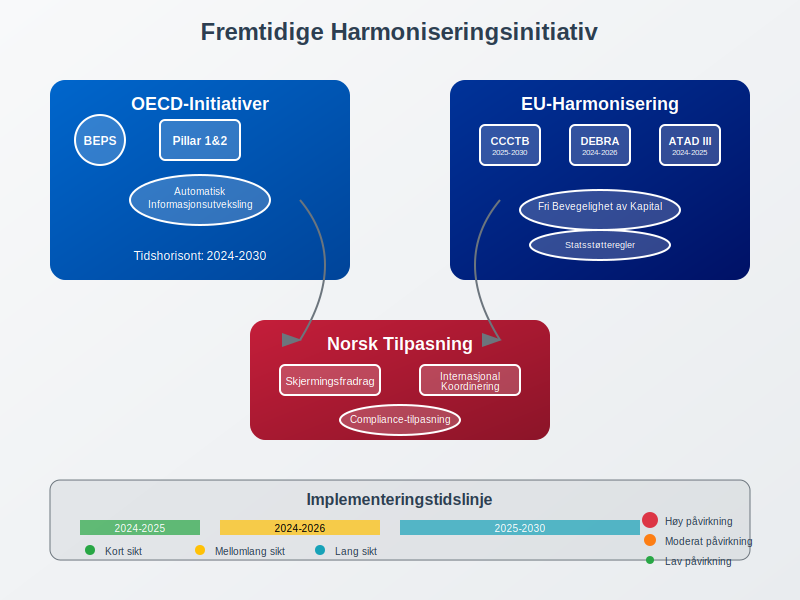
11.3 Bærekraft og ESG-integrasjon
Bærekraftsaspekter kan påvirke fremtidige skjermingsregler:
ESG-kriterier:
- Grønne investeringer: Spesielle skjermingsfordeler
- Bærekraftsrapportering: Kobling til skjermingsfradrag
- Social impact: Vurdering av samfunnsansvar
Implementeringsutfordringer:
Vurderingskriterier: Hvordan definere "grønne" investeringer?
Måling: Kvantifisering av bærekraftseffekter
Kontroll: Verifisering av ESG-compliance
Konklusjon
Skjermingsfradrag representerer en sofistikert løsning på en fundamental utfordring i skattepolitikken: hvordan sikre nøytralitet mellom ulike investeringsformer samtidig som man opprettholder et effektivt skattesystem. Dette fradraget har blitt en hjørnestein i norsk aksjonærbeskatning, med betydelige implikasjoner for både regnskapsføring og strategisk finansplanlegging.
Nøkkelinnsikter:
- Teoretisk fundament: Skjermingsfradrag sikrer at kun meravkastning utover risikofri rente beskattes
- Praktisk kompleksitet: Beregninger krever detaljert sporing av aksjeposter og eierperioder
- Strategisk verdi: Betydelig potensial for skatteoptimalisering gjennom timing og strukturering
- Fremtidsperspektiv: Digitaliteting og internasjonale harmoniseringskrav vil forme videre utvikling
Regnskapsmessige implikasjoner:
For regnskapsførere og økonomikynnsvarlige er forståelse av skjermingsfradrag kritisk for:
- Korrekt verdsettelse av skatteposisjoner i balansen
- Strategisk rådgivning til ledelse og aksjonærer om utbyttepolitikk
- Compliance-sikring gjennom robuste beregningssystemer og dokumentajon
- Optimalisering av samlet skattebyrde gjennom planlagt timing av transaksjoner
Fremtidsbilde:
Skjermingsfradrag vil sannsynligvis gjennomgå betydelige endringer i kommende år, drevet av:
- Teknologisk utvikling som muliggjør mer sofistikerte beregnings- og rapporteringssystemer
- Internasjonale koordineringsinitiativ som kan harmonisere nasjonale forskjeller
- Bærekraftshensyn som kan introdusere nye kriterier for skattefordeler
- Politiske endringer som kan justere balansen mellom skatteinngang og investeringsincentiver
For bedrifter og investorer som ønsker å maksimere verdien av sine investeringer, er det essensielt å ikke bare forstå dagens regler, men også å holde seg oppdatert på utviklingen og planlegge for fremtidige endringer. Skjermingsfradrag vil fortsette å være et viktig verktøy for å sikre at norsk aksjemarked forblir konkurransedyktig og attraktivt for både nasjonale og internasjonale investorer.
Ved å integrere skjermingsfradrag effektivt i den totale skatteplanleggingen, kan bedrifter og investorer oppnå betydelige besparelser samtidig som de bidrar til et sunt og transparent skattesystem som støtter økonomisk vekst og innovasjon.
For å få full oversikt over alle aspekter ved skjermingsfradrag og hvordan dette fungerer sammen med andre skatteordninger for aksjonærer, anbefaler vi vår Aksjonærmodellen - Komplett Guide til Norsk Aksjebeskatning.